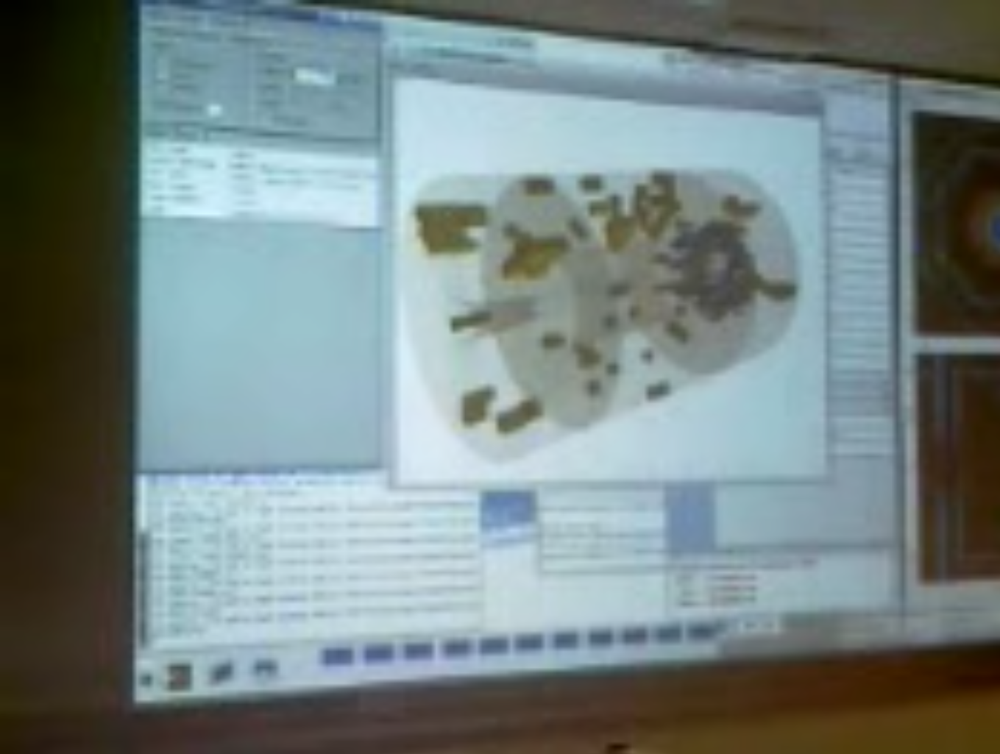
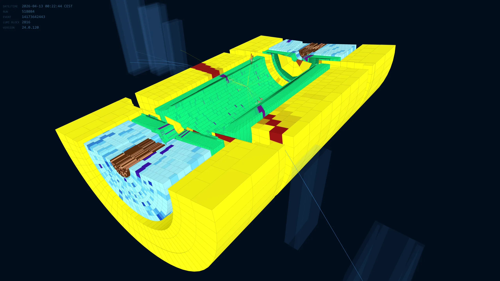
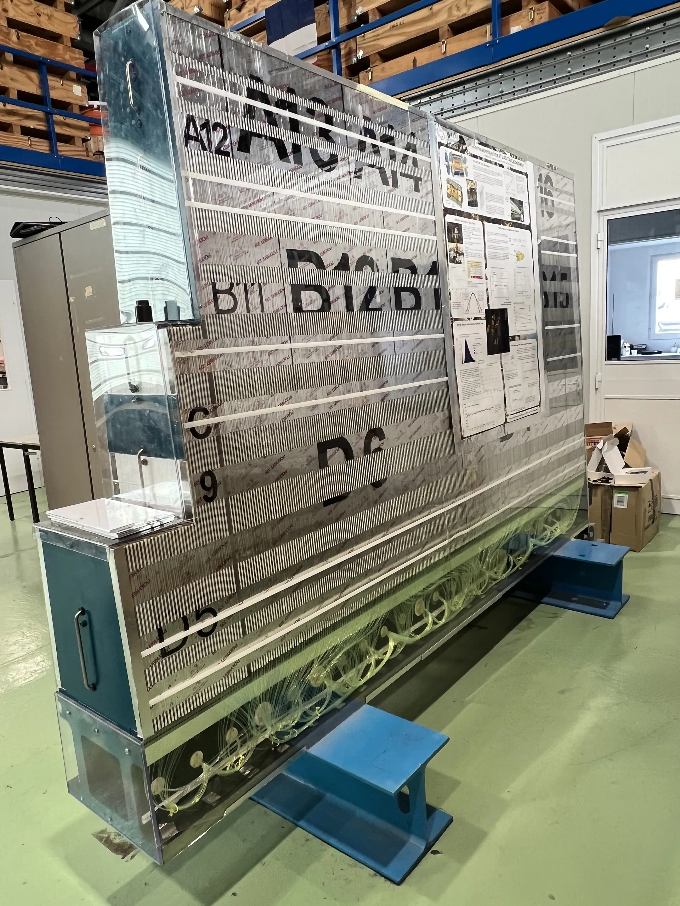
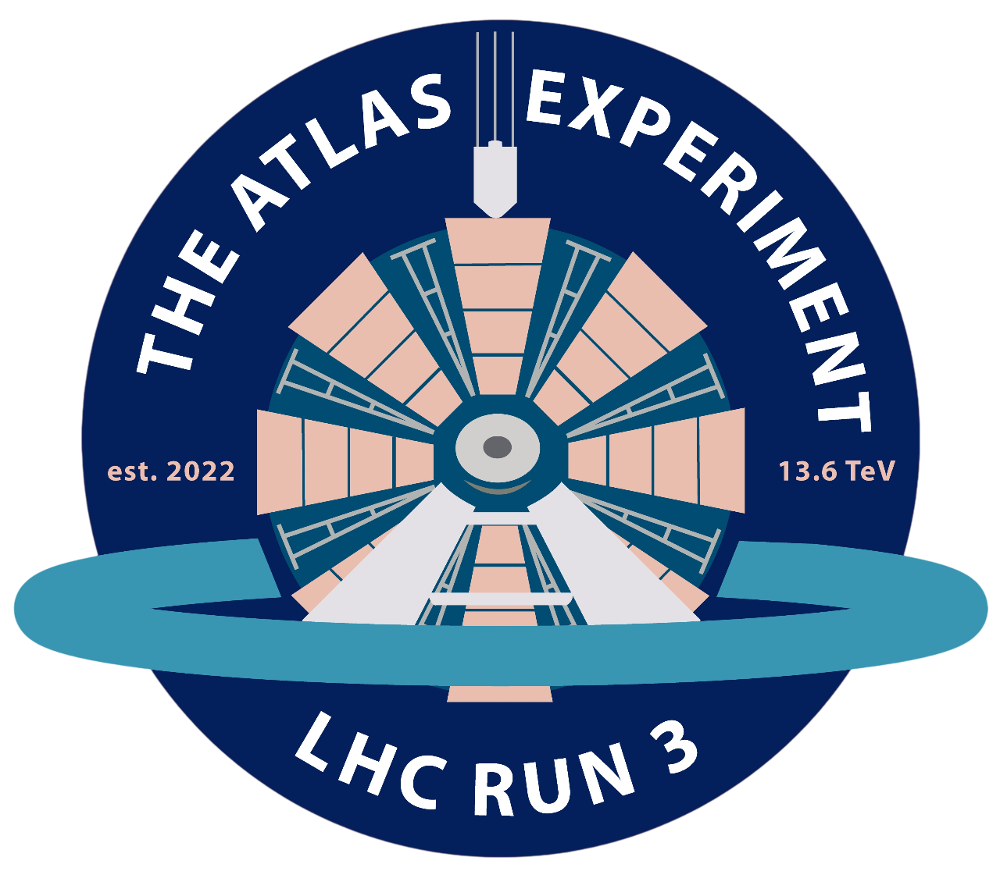
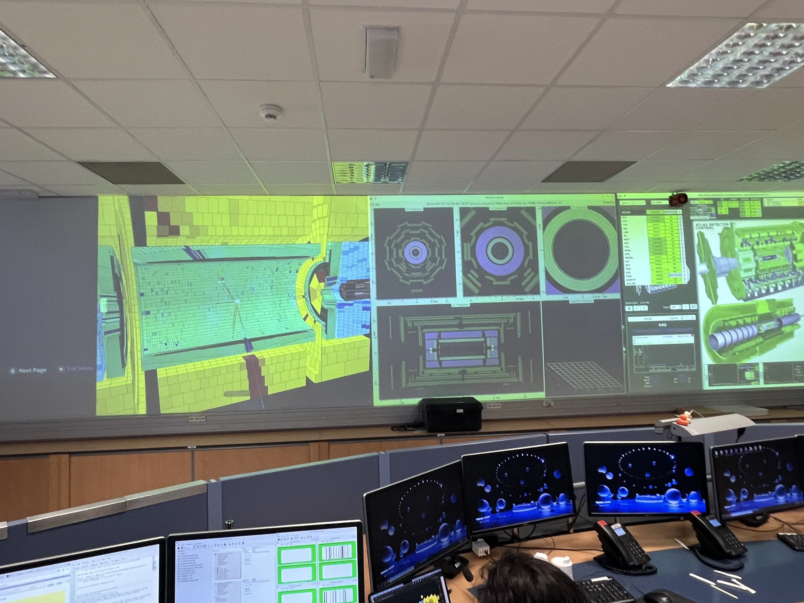
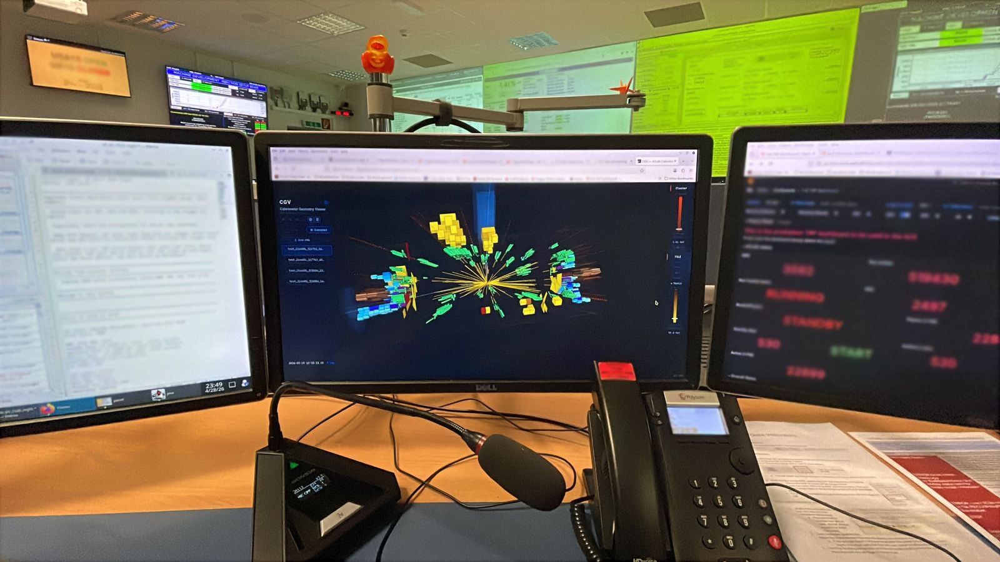
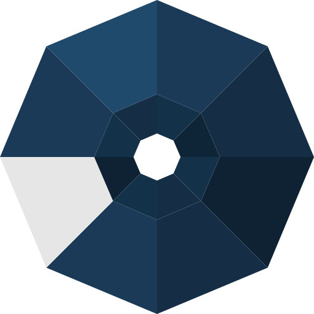

Late 2025. The PPEE building at UFJF. A NIPS-CERN undergraduate sits in on a class taught by one of the lab's senior researchers. The topic: what actually happens inside the world's most powerful particle accelerator. Five months later, the code that grew out of that class runs on the main wall of the ATLAS Control Room at CERN, and Run 3 tests have gone well enough that CGVWeb is now in active use inside the experiment.
The ATLAS detector at CERN is 46 metres long, 25 metres tall, and weighs 7,000 tonnes. It sits 100 metres underground at Point 1 of the Large Hadron Collider, a 27-kilometre ring where proton beams collide at nearly the speed of light, 40 million times per second. Each collision produces hundreds of particles. ATLAS records them all.
Physics describes matter through the Standard Model: 17 fundamental particles, between quarks, leptons, and the bosons that carry the forces between them. In 2012, ATLAS and CMS confirmed the Higgs boson, the last missing piece. The Higgs field is what gives particles their mass; without it, electrons and quarks would fly apart at the speed of light and atoms could not form. Nothing would exist, no chemistry, no stars, no life.
But the Standard Model is incomplete. It says nothing about gravity at the quantum scale, nothing about dark matter, nothing about the matter–antimatter asymmetry of the universe. The hypothetical graviton, the quantum carrier of gravity, has never been observed. Run 4 of the LHC, with expanded luminosity and refurbished detectors, may be the chance to find it. And that is exactly where CGVWeb comes in: bringing every collision the detector records, in real time, into any browser tab.
I. A class
The course was the genesis. End of 2025, Programa de Pós-Graduação em Engenharia Elétrica (PPEE) at UFJF; the instructor, Prof. Dr. Luciano Manhães de Andrade Filho. Sitting in on the class, Chrysthofer Arthur Amaro Afonso, a NIPS-CERN undergraduate, and Roberta L. Leonardo. It was the kind of class a senior researcher gives when he wants the next generation to understand the field for real: the history of CERN, of the LHC and of ATLAS itself, the geometry of every sub-detector, how particle showers develop, the layers that make up each calorimeter, which particles cross which regions and what each one leaves behind, E=mc² written on the board with the weight the equation deserves.
Toward the end, a footnote: in 2008, as part of his doctoral thesis, Luciano had written the Calorimeter Geometry Viewer, the CGV, that ran on Linux in the ATLAS Control Room at the start of Run 1. It worked, it served the shifters of that era, and when he came home to Brazil the tool fell silent.
Walking out of the room, one thought took hold of the group and would not let go: that tool could run in a browser. And it should.

II. A first prototype
The very first version was not even the detector. Before any real geometry, there was a cruder question: could a browser draw two hundred thousand cubes at once and still move? Chrysthofer built a throwaway concept to find out, coloured cubes and a density slider, no physics, and pushed the count up. It held. The browser rendered the whole field in real time, and the central feasibility was settled before the real work began.
Within four weeks, a stripped-down piece of the TileCal long barrel was already rotating inside a WebGL2 canvas. Three.js handled the renderer. The proportions were off and the cell scaling was wrong, but the central claim, that the ATLAS calorimeter geometry could live, end to end, in a browser tab, was no longer theoretical.
From there on, Luciano and Chrysthofer set the real goal: rebuild the entire calorimeter, cell by cell, in the browser. TileCal first, then LAr, then HEC and FCAL, and finally the inactive ATLAS-Ghost envelopes for spatial context. The project grew quickly over the following months. Every meeting with the shifters surfaced new requests that went straight into the next version: momentum vectors drawn for every particle, energy labels in real time, electron and positron tagging, reconstructed positions, and the entire muon system entering the display alongside the calorimeters.

III. Two clocks
In late March, Luciano flew to Geneva . From offices near the experimental cavern at Point 1, he continued the work on the CERN side while Chrysthofer coordinated from Juiz de Fora. Five hours of time difference. An Atlantic Ocean between them. Five months of work that would only end when Luciano flew home in late April, by which point CGVWeb was already running on the Control Room wall.
There was never a split between the political and the technical sides of the work. Luciano gathered missing ATLAS geometry parameters directly from CERN's internal databases, from the experiment's technical documentation, and from the source code of the previous CGV; he worked out how particles should be represented in the display, how Feynman-diagram topology would translate into the 3D view, and which decay products and signal signatures should come first. In parallel, he wrote code actively, in step with Chrysthofer, through every hour of those standing meetings.
Chrysthofer, in turn, built most of the main geometry in parallel with Luciano, TILE, LAr, HEC and MBTS, and took on everything that held the application together outside of the sub-detectors themselves: the production server, the .rpm packaging for CERN's internal infrastructure, the full colour scheme of the interface and the temperature map of the cells, the user interface end to end, and the running contact with the ATLAS Control Room operations team that would become essential the moment the tool needed to run inside Point 1. Meetings at five in the morning, Juiz de Fora time. At midnight. Sometimes for five straight hours.
IV. The geometry, rebuilt
The ATLAS calorimeter geometry was lifted from the ATLAS GeoModel database and converted through a custom ROOT-to-glTF pipeline, then packed into a single compressed binary, CaloGeometry.glb.gz, about 45 MB, that loads on page open. What the user sees is the actual detector:
- TileCal long barrel (~2,900 cells) and two extended barrels (~2,400 each);
- LAr EM barrel (~109,000 cells) and EM end-caps (~63,000);
- HEC (~5,600); FCAL 1/2/3 (~3,500);
- nine inactive ATLAS-Ghost envelopes (cryostats, support structures, shells), rendered at 15% opacity to provide spatial context without competing with the data.
Roughly two hundred thousand active cells, all enabled at once, running above 60 frames per second on the Dell Alienware AURORA we keep at the NIPS lab in Brazil. The browser sandbox was stretched to its limit. The application operates at the edge of what a modern browser can deliver, supported by Three.js, WebGPU, Rust and WebAssembly, the strongest web technologies for graphics and intensive computation available today.

V. Innovation: a decoder in Rust
Rendering was only half the question. The other half was computation: could a browser run a real compiled binary, fast, without grinding to a halt? Chrysthofer answered it with a second throwaway site, AOL — Ansikt Over Lyset. You uploaded an image and it stamped the ATLAS emblem over it, the pixel work done by a binary compiled to WebAssembly. Crude on the surface, decisive underneath: it proved that heavy computation could live in the browser through WASM. That discovery is what made the decoder below possible.
Each ATLAS calorimeter cell carries a unique 32-bit barcode, the compact ATLAS-ID, encoding sub-detector, side, sampling layer, and position in η and φ. To turn a live event into a coloured calorimeter, the browser has to decode hundreds of thousands of these barcodes per event, in real time, without ever pausing the animation.
The decoder is written in Rust, compiled to WebAssembly, and runs in a background worker thread so it never touches the main render loop. It is the same class of technology found today in video editors and demanding games, now applied to an experimental physics event display.

VI. The LAr in the right proportions
The TileCal geometry was forgiving of early approximations. The Liquid Argon calorimeter, with 170,000 cells arranged in an accordion structure spanning both ends of the detector, was not. Layer heights, η segmentation, and sampling depths had to match the real detector with precision, or the rendered picture would silently lie in the worst possible way.
Mateus A. Carvalho and Roberta L. Leonardo took on the LAr layer measurements and delivered the per-layer, per-sampling heights that went directly into the geometry pipeline.
VII. A paper
The work crystallised, as serious work tends to, into a peer-reviewed paper.
The first peer-reviewed contribution from the project. In Portuguese. With an undergraduate as lead author. Out of Juiz de Fora.
VIII. Geneva sees it
With Luciano at CERN, CGVWeb began to reach the people who mattered. The first inside ATLAS to look at it and say yes was Oleg Solovyanov. Interest spread from there. Two people carried the tool into the meetings where tools get adopted or forgotten: Melissa, from NIPS-CERN, and Daniela, who coordinates the ATLAS experiment itself. They presented at the calorimeter coordinators meeting, at the LAr group meeting, at the sessions where the experiment's working-group leaders decide what is worth building. They presented, fielded questions, took notes, and came back with the next set of corrections.
Interest grew. Then it grew faster.
IX. A wall outside cern.ch
The next obstacle was not technical. The Point 1 network, where the shifters run the detector, has no path to the open internet. Any address that doesn't end in cern.ch is unreachable from that room.
Getting CGVWeb onto the Control Room wall meant packaging the application as an RPM for CERN's internal infrastructure, provisioning a virtual machine inside the CERN General Purpose Network, and crossing the review chain that keeps Point 1 stable. The production deployment runs as a Python static-file server behind an Apache reverse proxy, reachable inside CERN at pc-atlas-www.cern.ch/cgv-web/. The VM, vm-calo-web-01, also mounts the Point 1 event file area at /atlas/EventDisplayEvents, giving the tool direct access to JiveXML files as the detector records them.
At the end of that chain, Fabio Pigozzi and Nikiforos Nikiforou at CERN, neither of them ours and both decisive, handled the VM provisioning and the RPM installation. On the coordination side, Diana Scannicchio from ATLAS operations carried the approvals through. Months of testing, paperwork, and patient correspondence. The Point 1 VM came up in late April 2026.
Nikephoros, from the Greek: bearer of victory. Christopher: bearer of Christ. Two bearers, six thousand miles apart, carrying the same project across a line that had been seventeen years away.
An aside

X. 28 April 2026, 18h50 BRT
At 18h50 Brasília time, the phone rang in Juiz de Fora. Luciano. A video came first: a single shifter workstation in the Control Room, six thousand miles away, the ATLAS calorimeter rotating live on the screen. Nineteen minutes later, at 19h09, a second video. The detector was no longer on a workstation. It was on the main wall of the ATLAS Control Room, the same wall where, eighteen years earlier, the CGV had run for the first time.
XI. The calls
There was a bug. The static display worked: ATLAS rotating, cells highlighted, geometry correct. But in online mode, the path that should auto-load a fresh collision event the moment ATLAS records it simply was not bringing the data through. Chrysthofer called the Control Room directly. The shifter on duty, John Brian, took the call. Something happened on that call that, as far as anyone in the lab can recall, had not happened before: an undergraduate student was sending remote commands to a Point 1 shifter, walking him through how to handle the ATLAS event infrastructure. They went through the pipeline together, step by step, until the failure point was isolated. The call ended. The fix was written.
The next morning, around 8h00 BRT, a second call. This time, Fábio Luna and Gustavo Libotte were physically in the Control Room alongside Luciano. Together, they walked through the event XML loop in real time: pulling the most recent JiveXML files from the Point 1 event area, testing the online pipeline live on the floor where ATLAS runs, verifying that the fix held under actual detector conditions. It held. By the end of the day, online mode was up, stable, and responding to every fresh event ATLAS recorded. CGVWeb was working end to end, inside Point 1.

XII. Documentation
For CGVWeb to be more than a demonstration, it had to be usable by any shifter who came after. A complete TWiki was written: overview, getting-started guide, full UI reference, all data modes (Live WEB, with long-poll on atlas-live.cern.ch; Live SERVER, reading the Point 1 event files at /atlas/EventDisplayEvents; bundled sample events; user-supplied files), per-sub-detector energy thresholds, geometry provenance, JiveXML payload format, ATLAS-ID encoding, keyboard shortcuts, troubleshooting, glossary, and references. Thirteen topics, end-user grade. The TWiki is now the canonical entry point for any shifter approaching CGVWeb for the first time.
XIII. Into the LHC pipeline
AAfter reviews by the LAr group, the calorimeter coordinators, and the ATLAS executive board, and with Run 3 testing that succeeded on every front, the decision was taken: CGVWeb is now in active use within the ATLAS Control Room, where it brings the calorimeter to life in real time for the people operating one of the most complex experiments ever built.
That sentence is worth sitting with. ATLAS publishes roughly a hundred papers per year, on Higgs decays, on top quark pairs, on searches for supersymmetry, dark matter candidates, and possibly the graviton. Each one may need to show the detector responding to a collision: tracks bending through the solenoid, energy deposits lighting up calorimeter cells, jets punching through material. Until now, producing those images required specialised offline tools. From Run 4 onward, a browser will be enough.
More than that: in online mode, CGVWeb stays permanently connected to the detector. Every proton–proton collision that ATLAS records can appear in the display within seconds. The tool is no longer a viewer; it is part of the operational infrastructure of one of the largest and most expensive scientific instruments in human history. NIPS-CERN entered the LHC pipeline.
A Brazilian laboratory, a federal university, and a browser tab, now at the centre of the search for new physics.
XIV. What comes next, xCGV
CGVWeb shows calorimeter energy deposits. It answers the question: where did the energy go?
The next step answers a harder one: who caused it?
The xCGV project, currently in early development, will consume XAOD files: the ATLAS Analysis Object Data format that carries the full reconstructed event. Not just calorimeter deposits, but charged-particle tracks curving through the solenoid field, identified electrons and muons, hadronic jets, displaced vertices, and missing transverse energy, the signature of particles that left the detector without being seen, including dark matter candidates. Every decay product of every collision, reconstructed and rendered.
Where CGVWeb shows the calorimeter lighting up, xCGV will show the physics behind it: the full picture of what happened inside the detector the moment the protons met.
XV. Run 4
The Large Hadron Collider is entering its long shutdown, roughly four years of upgrades to the machine and detectors before Run 4 begins, currently scheduled for around 2029–2030. New electronics, higher luminosity, a significantly expanded physics reach. The searches for the graviton, for dark matter, for physics beyond the Standard Model will resume at an intensity not seen before.
CGVWeb will be there. The mandate is clear and the runway is long. Four years to make the next version: faster, more particles, more modes, tighter integration with the ATLAS infrastructure. The intention is to use every one of them.
Acknowledgements
To the NIPS-CERN laboratory at UFJF, for being a team in the full sense: the opinions that sharpened the ideas, the criticisms that caught the mistakes, the encouragement that kept the work moving, and the people who showed up. This project grew in that environment.
To Mateus A. Carvalho and Roberta L. Leonardo, for the LAr layer measurements and for their authorship on the CBA paper.
To Melissa and Daniela, for taking CGVWeb into the ATLAS meetings where it mattered and carrying it through to adoption.
To Gustavo Libotte and Fábio Luna, for the Control Room testing, including being on the floor when it counted most.
To John Brian, the shifter who took the call.
To Fabio Pigozzi and Nikiforos Nikiforou at CERN, for the VM, the RPM, the deployment, and the patience with the review chain.
To Diana Scannicchio, for the coordination on the ATLAS operations side.
To Oleg Solovyanov, for being the first inside ATLAS to say yes.
To the ATLAS Collaboration, the Control Room team, the LAr group, and the ATLAS executive board, for the welcome, the rigour, and the trust.
To UFJF, the INCT CERN-Brasil, CNPq, CAPES, and FAPEMIG, for making this possible from the Brazilian side.
To Prof. Dr. Luciano Manhães de Andrade Filho, for the class that started everything and for the shoulder-to-shoulder work in the months that followed. To Chrysthofer Arthur Amaro Afonso, for recognising, inside that very class, the tool that needed to exist, and for carrying it together with Luciano all the way to the main wall of the Control Room.
Try it
